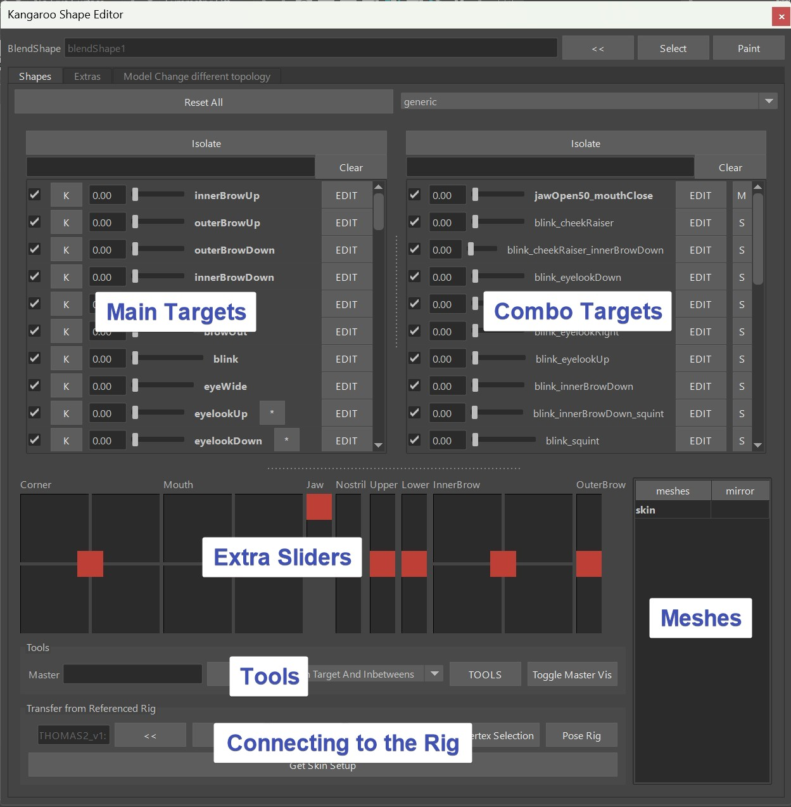
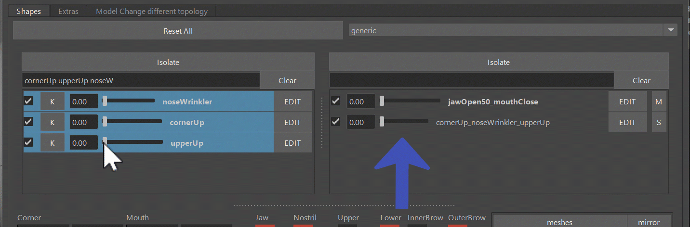
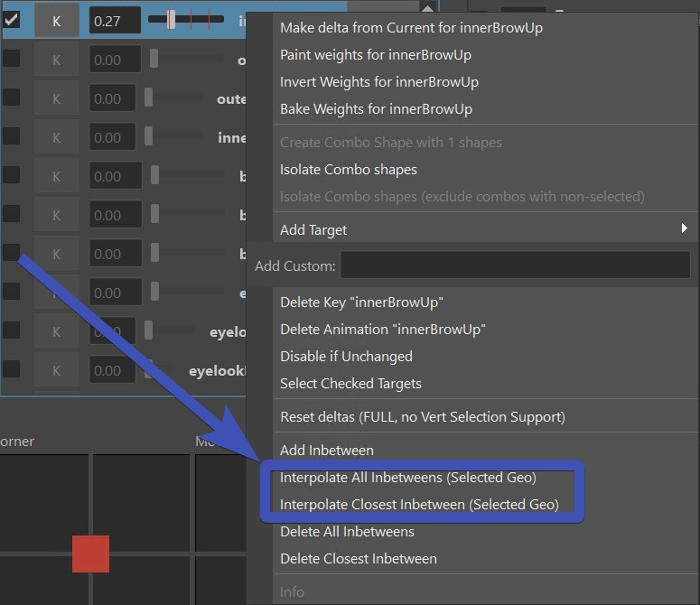
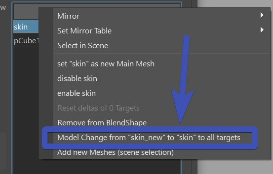

Shape Editor I
The Shape Editor is a tool for modeling Facial Shapes (targets).
Video
To see how the Shape Editor looks in action, you can also watch this Video.
But keep in mind that some menu options changed since the time of making that video.
You can open the Shape Editor with the shelf button 

It's NOT the Pose Editor!
You might find a few similarities to the Pose Editor, but the architecture and how we use it is different:
| Shape Editor | Pose Editor |
|---|---|
| Runs in a separate file that gets imported in importBlendShapeFile() | Runs on the actual rig |
| Focuses on sculpting and managing main/combo targets | Focuses on evaluations with interpolators, but also does sculpting |
| Creates one blendShape node for the whole setup | Creates many blendShape nodes. One for each mesh |
| The EDIT button handles ALL the meshes inside the blendShape | The EDIT button only does the meshes that you have selected before clicking it |
| Mirroring works with right click on the mesh in the meshes table. And meshes need to get selected in scene, too | Mirroring works with right click on the Target, having the meshes selected |
Getting Started
You can select any polygon mesh, and click the << button:

If that polygon mesh wasn't used with the Shape Editor yet, it'll ask you to choose a Target List.
By default you just have cartoon and general. If you are creating a blendShape rig where you want to do most
shapes including mouth, eyes, etc with blendShapes - choose general. But if you are doing a rig where you want
do do most targets with splines, then cartoon is a better start, because it only lists the targets that doesn't
have spline rigs.
What did he do under the hood?
He created a new blendShape node. And all the Targets that you see in the UI are basically targets on
the blendShape, just like what you've probably already created before:

Note
You are not limited to just general or cartoon! Later in Adding More Main Targets you'll see how to either create your own custom lists or just add targets to your existing collection.
Now to sculpt some main targets by clicking the Edit button and sculpt:

Comparing with Pose Editor
Here we have a similarity to the Pose Editor but also a difference. While in the Pose Editor you also have those EDIT buttons that you use to sculpt the Targets, in the Pose Editor you have to select the meshes, while in the Shape Editor it just does it on all the meshes that are in the collection.
Kangaroo Tool Tip
While in the gif above I just selected vertices and moved them, you can do a lot more. For example you can use the sculpting tools (Mesh Tools -> Sculpting Tools) or use some Kangaroo Geometry Tools such as the Match or Smooth Vertices tools.
Combos
Combos - Create Them
Combo targets is the Table on the right side. You can create any combination between 2, 3, 4, ... Main Targets. Most of the
time we create combination of just 2 targets. Sometimes 3, and very rarely 4.
For a combination of 2 targets the combo would be called for example cornerUp_upperUp. A combination of 3 would be
cornerUp_noseWrinkler_upperUp. It's basically the main targets' names ordered alphabetically and separated by a single _.
Note
You will never have to name them yourself, the tool takes care of it. You just need to be aware that whenever you create a Main Target yourself, it cannot have the _ sign in there.
Creating them is easy, just select the main targets, right click -> create combo Targets:

Combos - Multiply/Minimum
In the gif above you can see that in the end we switch between the evaluation modes Muliply and Minimum.
Multiply means that the main targets are just multiplied. So if cornerUp is activated 0.8 and upperUp is activated 0.5,
the combination will be 0.4 (0.8 * 0.5).
And in Minimum in the same example it would be 0.5, because 0.5 is the smaller one between 0.8 and 0.5.
Both modes have pros and cons. If you use Multiply, the result will be smoother but the issue is that the shape will not be driven linearly when all main targets are being activated the same time. For example if you have 2 main targets that are both activated as 0.5, the combo target will be 0.25. But ideally it should also be 0.5. Look at this example where we have a combination of 3 Main Targets. See how it moves slower at smaller values, and then speeds up at higher values?
If you need it to run linearly, you can switch to Minimum. If all main targets are 0.5, the combo target would be 0.5, too. But Minimum has
the ugly disadvantage that it's not as smooth as Multiply. In certain situations you'll find that as one main target is being
activated slowly, the combo might suddenly change from getting activated to not reacting.
Look at this example. See how it moves more linear, but if I move one alone it starts activating at one point? Animators hate that!

Warning
The disadvantages of both modes (Multiply and Minimum) are only getting worse the more Main Targets you use for the combo. So keep it to a minimum! Any combination of more than 3 targets can get very nasty.
Combos - add Percentage
When you open the blendShapes.ma on the THOMAS asset, you'll see a combo called jawOpen50_mouthClose. This just means that the jawOpen will only go to 0.5 (50 %):
Changing and adding percentages happens through the marking menu:
Try it out, but don't overuse it! The art of sculpting shapes is making this work with the simplest logics. But if you do need the extra complexity, it's there.
Extra Sliders
At the bottom you see a lot of sliders. Those are just representations of how the rig will later set them up. So they are basically
a great way to get a feeling of how they will work later.
On each slider you could also isolate the targets with the right click menu, so you can see what targets are driven by them.
Open the Shape Editor File from the templates asset THOMAS, and play around with the sliders:
Mirror
Mirroring contains 2 parts. Creating Mirror Table, and actually Mirroring
Mirror Table
Right click on the mesh in the Mesh Table at the bottom right:

Here's a list of the options:
| Table | Description |
|---|---|
| middle mesh, edgeflow | maping vertices through the middle edge (edgeflow) algorithm |
| middle mesh, vertex positions | mapping through vertex positions |
| middle mesh, face points | finds point on face, and does barycentric mapping |
| side meshes, ids | needs 2 meshes with same vertex orders |
| side meshes, vertex positions | needs 2 meshes, maps by vertex positions |
| side meshes, face points | needs 2 meshes, maps by point on face and barycentric coordinates |
Actually Mirroring
Mirroring also works on vertex selection. But you do need to right click on the actual mesh for the mirror.

Don't Forget
Do not forget to select the mesh in scene! Sometimes we assume that when we right click on the actual mesh in the UI it would do the mesh. But from the power of being able to select vertices comes the responsibility to also select the mesh in scene.
Inbetweens
You can add inbetweens to any Target.

Interpolate
Inbetweens are basically another shape stored in the node. It may not appear like this at first because when you apply the
inbetween, it gives it a default shape which is the interpolated shape at the position of where you apply it.
BUT if you change the Full Target, the inbetween will NOT change.
But there's a solution to it - you can re-interpolate the inbetweens. You'll loose the shape that you sculpted on the inbetween, but
it'll follow again that the full shape does. You'll see the options on the right click menu:

Note
You'll see the words All Inbetweens and Closest Inbetwween a lot in the Shape Editor. It's relevant when you have more than one inbetween. So in the picture above where there are 3 inbetweens (red marks) the current weight is closer to the first one, so the Closest Inbetween would only touch the first one.
Watch Out
When the blendShapesAndSliders() adds the blendShapes, the logic of inbetweens is a bit complicated because of a few
mathematical challenges on how inbetweens work in general. This means in certain situations you might find things behaving a bit strange.
It's recommended to keep inbetweens to minimum. And if you do use them, watch out for the results carefully.
Meshes
Meshes - Add Secondary Meshes
Easy, just select them and add them with the right click menu:

Kangaroo Tool Tip
By default they are just sitting there and not following the main skin. But you can make it follow the skin with the Tools explained in Shape Editor 2.
Meshes - Main Mesh
It's important to keep the Main Mesh (skin in this example) as the main mesh. It's usually always the case, unless
you start replacing a few meshes. But it's easily fixed with right click menu:

Meshes - Model Change
same topology
If the model changed in topology, it's easy. Just select the new mesh, and then with right click on the mesh that you want to change -> Model Change from "xxx" to "xxx" 
different topology
If the overall shape is still the same and modeling just changed the topology a bit, it's a bit of a manual process,
but it's not difficult:
1. rename the old mesh
2. restart the shape editor
3. add the new mesh (with correct name!)
4. warp the new mesh to the old mesh
5. if the old mesh was the main mesh: set it as Main Mesh
6. check the lips on open targets! Targets like jawOpen. upperUp or lowerDown can get screwed on warp. If they
are screwed, either fix them manually or try the Warp UVs
different topology and different shape
If the topology is different AND the shape is entirely different, we are basically talking about making a new character. Check Shape Editor 2 - Transfer to New Character.